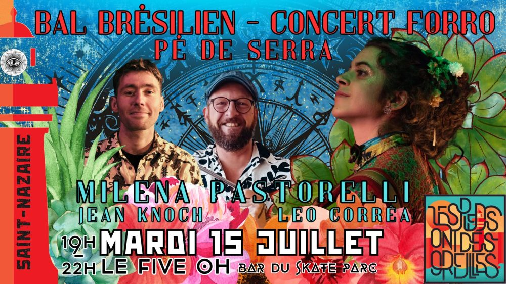

Bal-concert trio forró pé-de-serra au Five-Oh

🎶🌞 Le forró débarque au Five-oh ! 🌞🎶
Le mardi 15 juillet, on vous emmène tout droit au nord-est du Brésil sans quitter Saint-Nazaire ! 🏖️🔥 Venez vibrer au son du forró, cette musique irrésistible qui donne des fourmis dans les jambes et le sourire jusqu’aux oreilles.
Sur scène, un trio de choc :
🎹 Milena Pastorelli (accordéon)
🥁 Jean Knoch (zabumba)
✨ Léo Corrêa (chant & triangle)
Préparez-vous à danser, tourbillonner et sentir la chaleur des tropiques… Que vous soyez déjà accro au forró ou curieu.se.x de le découvrir, c’est LE rendez-vous pour faire le plein d’énergie et de bonne humeur. 💃🕺
📍 Five-oh – Saint-Nazaire
📅 Mardi 15 juillet
🕗 19h début du bal, 19h30 concert.
🔥 Venez avec vos ami.e.s, vos sourires et vos pieds nus ou chaussés… le reste, on s’en charge !
Nous ferons passer un CHAPEAU pour les musiciens (qui sont des pros, soit dit en passant). Entre 5 et 10€ conseillé 😘
Préparez la monnaie 💰